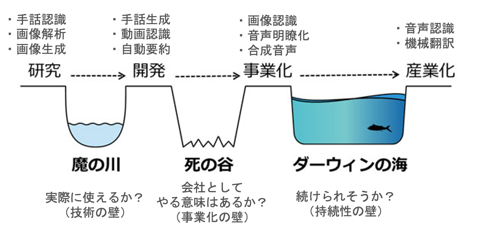
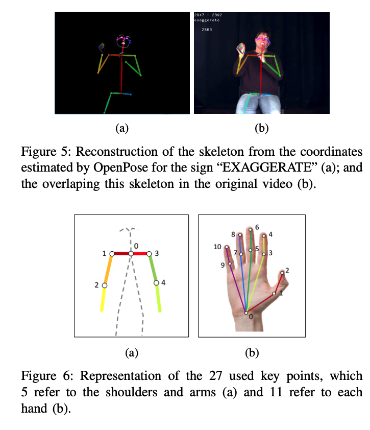
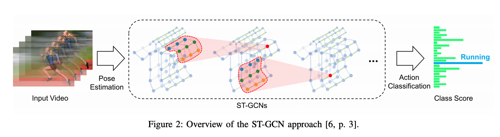
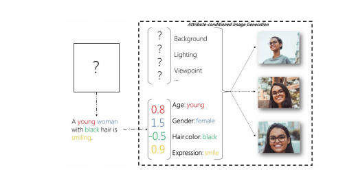
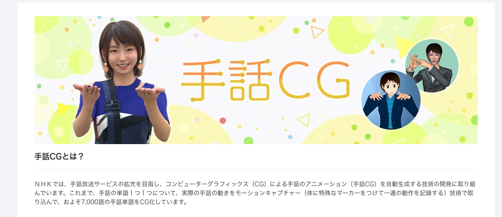
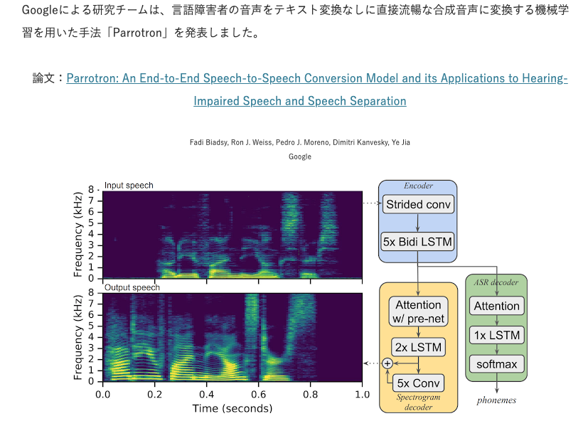
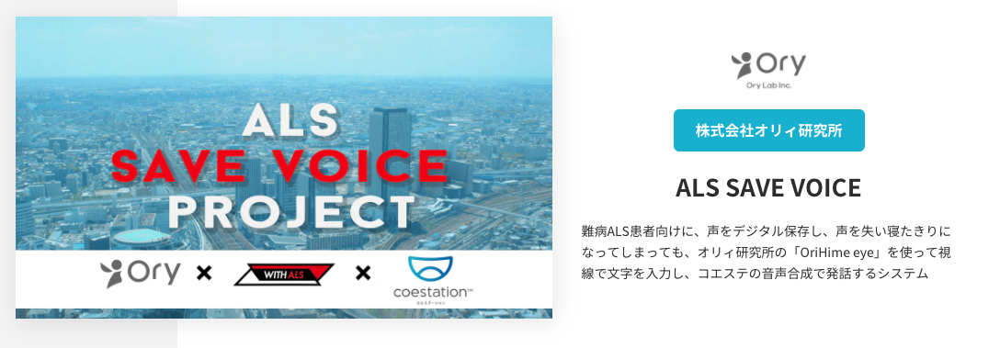
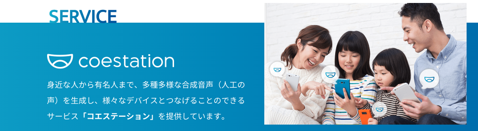
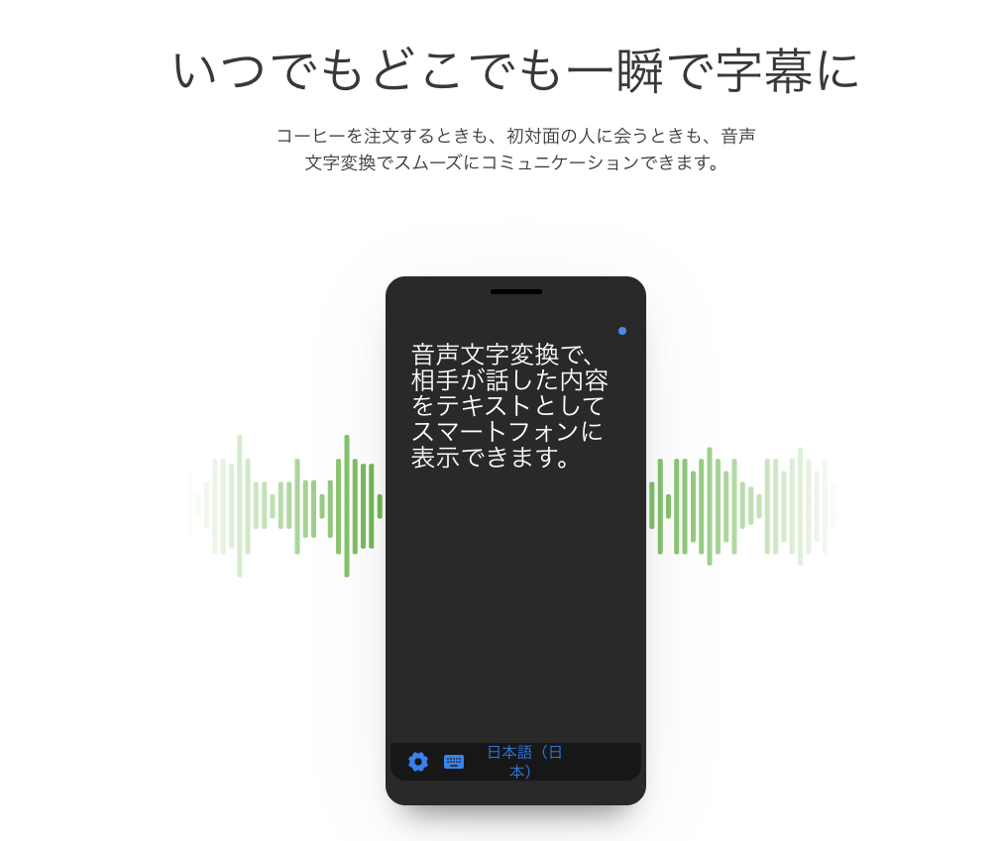

現在のAI for Accessibility のステータス（2020年8月時点、独断）

以下、各技術の現時点のステータスを紹介する。
研究段階
手話認識
動作認識の技術を応用したものが多い。ただし、まだ数十の手話単語を認識するものが大半で、文章の認識を実現しているものは少ない。
手話認識を目的とした充分なオープンデータがないこと、言語学の分野でも手話はまだ研究が進んでいないことも理由のひとつである。


画像生成
画像生成は非常に難しいタスクであり、現状は特定のデータセット（鳥、セレブ顔）での検証が中心である。
テキストの意味を要約するような画像生成の実現はまだ先だが、この技術が実現することで、テキストを苦手とする聴覚障害者が、生成された画像を見ることで意味を把握できることが期待できる。

画像引用：A Survey and Taxonomy of Adversarial Neural Networks for Text-to-Image Synthesis”. arXiv1910.09399
開発段階
手話生成
国内ではNHKが開発に取り組んでいる。
手話CGや気象情報手話CG)が公開されている。
緊急時に手話通訳士が用意できない場面での活用が想定されている。ただし、現時点では自由文からの変換が難しいため、気象情報のように定型文からの変換に留まっている。

画像引用：NHK手話CG
事業化
音声平滑化
Google が音声アシスタントに活用することを目的に技術をリリースしている。
音声でコミュニケーションを取りたい聴覚障害者への活用が期待できる。

画像引用：Google、言語障害者の音声を流暢な合成音声に直接変換する機械学習を用いた手法「Parrotron」発表。音声アシスタントへの入力エラー率を軽減URL
合成音声
東芝が事業化(コエステーション)している。これは少数の音声サンプルから、サンプルを提供した人物の人工音声を生成する技術である。
通常のビジネス的活用だけではなく、ALS患者（筋肉が衰え、徐々に話すことができなくなる）の声を残す事例も報告されている。


画像引用：コエステーション
産業化
音声認識
各社が聴覚障害者向け音声認識技術をリリースしている。以下はその一例である。
もともと音声認識は、手が離せないときのメモ取り、議事録の自動化、動画のキャプションなど活用範囲が広く、聴覚障害者向けは応用の１つである。

画像引用：Android音声文字変換のご紹介